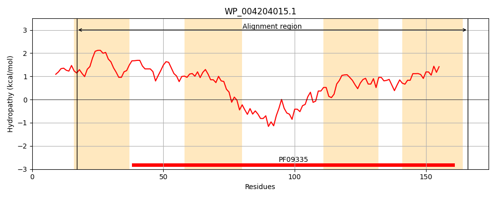
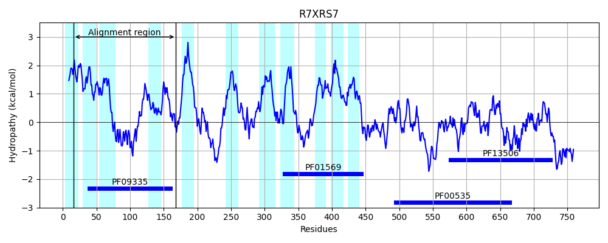
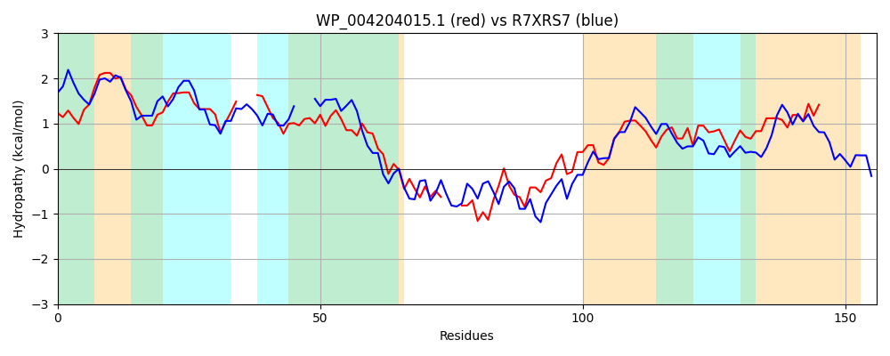

Hit Accession: R7XRS7
Hit TCID: 9.B.27.2.12
Hit Description: gnl|BL_ORD_ID|19818 gnl|TC-DB|R7XRS7|9.B.27.2.12 Dolichyl-phosphate beta-D-mannosyltransferase OS=Nocardioides sp. CF8 OX=110319 GN=CF8_4119 PE=4 SV=1
Mach Len: 156
e:0.000000
Query TMS Count : 4
Hit TMS Count: 11
TMS-Overlap Score: 2.500000
Predicted Substrates:None
BLAST Alignment:
Score: 182 , Bit scores: 74 bits, E-value: 2.9e-16, Alignment length: 156, Percentage identity: 35
Query: 17 LVLLMVFLLTFTKSCALVSLAIPGTSGLLLLGTFA---SASLGHFLLMWSSASLGAIGGFWLSWWLGVRYRHRL---TQLRWLTAERLARSRLFFQRRGLWAVFFSRFLSPLRATLPLVSGASGLPLWSFQLANVSSGLLWPFLLLSPGALSLSLW 166
+ LL+VF L +S A + PG L+L G A + SLG L ++ GAI G + + +G RY RL T R++ + L R+ + RG AVFF RF + LR +P ++G SGL +F NV+SG+ W + + G L S W
Sbjct: 16 VALLVVFALPALESSAFIGFIFPGEIALILGGVMAYEGNVSLGAVL---AAGITGAIVGDSVGYAVGRRYGRRLLDGTVGRFVKSSHLDRAETYLAERGGRAVFFGRFTAALRVMIPGLAGMSGLRYRTFLTFNVASGVAWGTMSVLLGYLGGSSW 168 | Protein Hydropathy Plots: |
|---|
|  |  |
Pairwise Alignment-Hydropathy Plot:
|
|---|
|  |